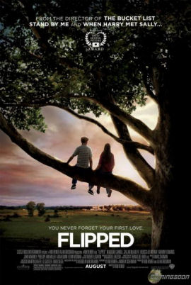

黃郁喬推薦電影

《怦然心動》是一部2010年的美國青少年浪漫喜劇劇情片，由羅伯·雷納所導演。改編自文德琳·范·德拉安南所著的《怦然心動》一書。
" You have to look at the whole landscape. A painting is more than the sum of it's parts. A cow by itself is just A cow. A meadow by itself is just grass, flowers. And the sun picking through the trees, is just a beam of light. But you put them all together and it can be magic."
你必須看到整片風景，一幅畫的整體會大於每個小部分所加起來的總和。牛本身只是一隻牛、草地本來也只是草和花朵、陽光穿過樹林也不過只是一束光，但是把它們全放在一起，就會產生魔法。